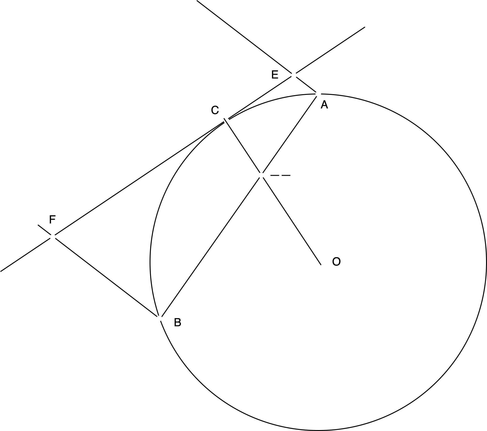

1
次の \(x\) についての方程式の解を求めよ．ただし、 \(0<a<\frac{1}{4}\) とする。
\[ x^2 + 2ax + \frac{1}{16} = -a + \sqrt{a^2 + x - \frac{1}{16}}\; \]
2
| 難易度 | 所要時間 |
|---|---|
| C | 30分 |
問題
次のような条件を満たす非負整数 \(n\) は無限に存在する事を示せ。
- \(n,n+1,n+2\) のいずれも二つの整数の平方の和である。
例えば、\(n=0\) の時、\(0,1,2\) は \(0^2+0^2, 0^2+1^2, 1^2+1^2\) となり条件を満たす。
解答
\(a^2+1\) が素数とならないように \(a\) を選ぶ。この時、\(a^2+1= pq\) と1より大きい整数 \(p,q\) が存在する。そうすると、
\[ a^2+1 = \left(\frac{p+q}{2} \right)^2 + \left(\frac{p-q}{2} \right)^2 \]
と表すことができる。ここで \(n=\left(\frac{p+q}{2} \right)^2 - 1\) とすると、
\[\begin{align*} n &= \left(\frac{p+q}{2} \right)^2 - 1 = (pq - 1)^2 - \left(\frac{p-q}{2} \right)^2\\ n+1 &= \left(\frac{p+q}{2} \right)^2 + 0^2\\ n+2 &= \left(\frac{p+q}{2} \right)^2 + 1^2 \end{align*}\]
となり、条件を満たす。このような \(a\) は無限に存在するので、\(n\) も無限に存在する。
3
| 難易度 | 所要時間 |
|---|---|
| B | 15分 |
問題
\(m,n\) が正整数であるとき、次の値が整数である事を示せ。
\[ \frac{\gcd (m,n)}{n} \binom{n}{m}=\frac{\gcd (m,n)}{n} {}_n\mathrm{C}_m \]
解答
\[ \lambda m + \mu n = \gcd (m,n) \]
となる整数 \(\lambda, \mu\) が存在する。この時、与えられた式の値 \(A\) は、
\[\begin{align*} A &= \frac{\gcd (m,n)}{n} \binom{n}{m}\\ &= \frac{\lambda m + \mu n}{n} \binom{n}{m}\\ &= \lambda \frac{m}{n} \binom{n}{m} + \mu \binom{n}{m}\\ &= \lambda \frac{m}{n} \frac{n}{m} \binom{n-1}{m-1} + \mu \binom{n}{m}\\ &= \lambda \binom{n-1}{m-1} + \mu \binom{n}{m}\\ \end{align*}\]
となり、整数となる。
4
| 難易度 | 所要時間 |
|---|---|
| B | 30分 |
問題
次の連立方程式の実数解を全て求めよ。
\[\begin{equation} \left\{ \, \begin{aligned} \dfrac{3}{x} + \dfrac{2}{y} &= 2(3x^2+y^2)(x^2+3y^2)\\ - \dfrac{3}{x} + \dfrac{2}{y} &= 4(x^2+y^2)(x^2-y^2) \end{aligned} \right. \end{equation}\]
解答
互いの式を足し、引くことで、次の式が成り立つ
\[\begin{equation} \left\{ \, \begin{aligned} \dfrac{3}{x} &= x^4+10x^2y^2+5y^2\\ \dfrac{2}{y} &= 5x^4+10x^2y^2+y^4 \end{aligned} \right. \end{equation}\]
\(x,y\neq 0\) から、次のように変形できる
\[\begin{equation} \left\{ \, \begin{aligned} 3 &= x^5+10x^3y^2+5xy^2\\ 2 &= 5x^4y+10x^2y^3+y^5 \end{aligned} \right. \end{equation}\]
これを再び足し引きすることによって、
\[\begin{equation} \left\{ \, \begin{aligned} 5 &= x^5+10x^3y^2+5xy^2+5x^4y+10x^2y^3+y^5 = (x+y)^5\\ 1 &= x^5+10x^3y^2+5xy^2-5x^4y-10x^2y^3-y^5 = (x-y)^5 \end{aligned} \right. \end{equation}\]
以上のことから求める解は、 \[ (x,y)=\left(\dfrac{1+\sqrt[5]{5} }{2},\dfrac{1-\sqrt[5]{5} }{2}\right) \] である。
5
| 難易度 | 所要時間 |
|---|---|
| C | 30分 |
問題
\(p\) は \(3\) 以上の素数として、 \(k = \lfloor 2p/3 \rfloor\) とする。この時、次の式の値が \(p^2\) で割り切れることを示せ。
\[ \binom{p}{1} + \binom{p}{2} + \cdots + \binom{p}{k} \]
ただし、
\[ \binom{m}{n} = \frac{m!}{n!(m-n)!} \]
とする。
解答
\[ \frac{1}{p}\binom{p}{n} = \frac{1}{n} \frac{p-1}{1} \frac{p-2}{2} \cdots \frac{p-n+1}{n-1} \equiv \frac{(-1)^{n-1}}{n} \pmod{p} \]
ここで、 \(x \equiv y \pmod{p}\) というのは、有理数 \(x - y\) の分数の分子が \(p\) の倍数であることを意味する。よって、次の式を示せば十分である。
\[ \sum_{n=1}^{k} \frac{(-1)^{n-1}}{n} \equiv 0 \pmod{p} \]
ここで、 \(p\) を \(6\) で割った余りで場合分けをする。
- \(p = 6q + 1\) の時
\(k = 4q\) となる。なので、
\[\begin{align*} \sum_{n=1}^{4q} \frac{(-1)^{n-1}}{n} &= \sum_{n=1}^{4q} \frac{1}{n} - 2 \sum_{n=1}^{2q}\frac{1}{2n} \\ &= \sum_{n=2q+1}^{4q} \frac{1}{n} \\ &= \sum_{2q+1}^{3q} \left( \frac{1}{n} + \frac{1}{6q+1-n} \right) \\ &= \sum_{2q+1}^{3q} \frac{p}{n(p-n)} \equiv 0 \pmod{p} \end{align*}\]
とわかる。
- \(p = 6q + 5\) の時
上と全く同じ作業で結論が出る。
6
| 難易度 | 所要時間 |
|---|---|
| C | 30分 |
問題
任意の整数 \(a, b, c\) に対して、次の式
\[ \sqrt{n^3 + an^2 + bn + c} \]
の値が整数とならないような非負整数 \(n\) が存在することを示せ。
解答
\(f(n) = n^3 + an^2 + bn + c\) とする。 \(f(n), f(n+2)\) は偶奇を共にする上、任意の数の自乗は \(4\) で割った余りが \(0,1\) である。ゆえに、 \(f(n), f(n+2)\) が共にある数の自乗だったとすれば、その差は \(4\) で割り切れる。ところが、
\[ f(n+2) - f(n) = 6n^2 + 12n + 8 + 2b \equiv 2n^2 + 2b \pmod{4} \]
なので、 \(n,b\) が偶奇を異にすれば、 \(2n^2 + 2b\) は \(0\) にならない。よって、 \(f(n), f(n+2)\) どちらかは平方数にならない。
7
| 難易度 | 所要時間 |
|---|---|
| C | 35分 |
問題
\(n\) を \(2\) 以上の整数として、 \(f(x)\) を \(x\) の \(n\) 次実数係数多項式とする。 このとき、 多項式 \(\{f(x)\}^2\) は最大幾つの負の係数の項を持つか。
解答
\(\{f(x)\}^2\) の最高次の係数と定数項は絶対に正なので、答えは \(2n-1\) 以下となるのは明らか。次に、
\[\begin{align*} f(x) &= a_n x^n + a_{n-1} x^{n-1} + \cdots + a_1 x + a_0 \\ \{f(x)\}^2 &= b_n x^{2n} + b_{n-1} x^{2n-1} + \cdots + b_1 x + b_0 \end{align*}\]
とおいておく。 \(b_i\) が \(1 \leq i \leq 2n-1\) で全て負であると仮定すると、
まず \(b_1 = 2a_0a_1 < 0\) である。ここで、一般性を失うことなく \(a_0>0\) と仮定できて、 \(a_1<0\) となる。次に係数を考えると、
\[ b_i = \sum_{j=0}^{i} a_j a_{i-j} = 2a_oa_i + \sum_{j=1}^{i-1} a_j a_{i-j} \]
となる。ここで、
\[ 2a_0a_i = b_i - \sum_{j=1}^{i-1} a_j a_{i-j} < 0 \]
となることから、 \(a_i < 0\) となる。これを繰り返すことで、 \(a_n < 0\) となる。よって、 \(b_{2n-1} = 2a_0a_n > 0\) となり、矛盾する。ゆえに、答えは \(2n-2\) 以下である。
逆に、 \(2n-2\) であることを示せばいいのだが、例えば次のような多項式を考えれば良い。
\[ f(x) = n(x^n+1) - (x^{n-1} + x^{n-2} + \cdots + x) \]
そうすれば、
\[\begin{align*} \{f(x)\}^2 = n^2(x^{2n}+2x^n+1) &- 2n(x^n+1)(x^{n-1}+x^{n-2}+\cdots+x)\\ &+ (x^{n-1}+x^{n-2}+\cdots+x)^2 \end{align*}\]
となって、 \(2n-2\) 個の負の係数を持つ。
8
| 難易度 | 所要時間 |
|---|---|
| A | 15分 |
問題
\(n \in \mathbb{Z}_{>0}\) のとき、次の不等式を示せ。
\[ 2n^2 + 3n + 1 \geq 6(n!)^{2/n} \]
解答
9
| 難易度 | 所要時間 |
|---|---|
| B | 20分 |
問題
\(n\) を正整数として、ある立方体の体積が次のような式で表されることはあるか。
\[ 3n^2+3n+7 \]
解答
考えている立方体の体積を \(m^3\) とすると、 \(m^3 = 3n^2 + 3n + 7\) から \(m\equiv 1 \pmod{3}\) となる。よって、 \(m=3k+1\) とおけば、
\[ 3k(3k^2+3k+1) = n^2 + n + 2 \]
となるわけだが、この右辺は \(3\) で割り切れないが、右辺は割り切れて矛盾する。よって、このような立方体は存在しない。
10
| 難易度 | 所要時間 |
|---|---|
| B | 25分 |
問題
\(f,g,h\) を二次関数とするとき、 \(f\circ g \circ h\) が \(1,2,3,4,5,6,7,8\) を解に持つことはあり得るか。
すなわち、\(f(x),g(x),h(x)\) がそれぞれ \(x\) についての二次関数である時、 \(f(g(h(x)))=0\) が \(x=1,2,3,4,5,6,7,8\) を解に持つことはあり得るか。
今後の問題は全て前者のような書き方をする。
解答
\(f\circ g\) は4つの解を持つので、 \(h\) は \(x=1,2,3,4,5,6,7,8\) で4つの値を取る。対称性により、 \(h\) の軸は \(9/2\) となり、 \(h(1)=h(8), h(2)=h(7), h(3)=h(6), h(4)=h(5)\) となる。
次に、 \(f\) は2つの解を持つので、 \(g\circ h(1), g\circ h(2), g\circ h(3), g\circ h(4)\) は2つの値を取る。対称性により、 \(g\circ h(1)=g\circ h(4), g\circ h(2)=g\circ h(3)\) となる。
以上二つの条件を満たす \(h\) を考えた時、 \(h=Ax^2+Bx+C\) とおくと、\(A=0\) となって、そもそも成り立たないことがわかる。よって、このような \(f,g,h\) は存在しない。
11
| 難易度 | 所要時間 |
|---|---|
| A- | 10分 |
問題
ミリアム: アーちゃんだ！ やっほー！
アルティナ: ミリアムさん……。お久しぶりです。
ミリアム: もぅ！ お姉ちゃんって呼んでよ！
アルティナ: それで、今日は平日だったと思いますが、どうしてここに？ 情報局の任務は終わったのですか？
ミリアム: いや、まだ終わってないんだけど、ちょうど学院に用事があってね！ ついで寄ったところだよ！ それで、アーちゃんは何をしてるの？
アルティナ: 私は今、基礎弾道学の宿題をしているところです。
ミリアム: 見せて見せて！
【問題】
照準と着弾のズレは、銃身の仰角によるか。理由を含めて考察せよ。
ミリアム: 懐かしいなぁ！ ボクも昔、こんな問題解いたような気がするなぁ！
アルティナ: そうですか。では、どうやって解いたのですか？
ミリアム: 忘れちゃった！
アルティナ: ……。
リィン: おいおい……。
ミリアム: あ、リィンだ！
アルティナ: リィン教官、こんにちは。
リィン: ミハイル中佐の宿題だな。困っているようなら手伝うけど？
アルティナ: では、お願いします。
アルティナはそう言うと、手元に書いたメモを出した。
リィン: 弾道が放物線で、銃身は水平方向上に \(\theta\) だけ傾いていて、照準は銃身に対して \(\phi\) だけ下に傾いていると考えたわけだな。
アルティナ: はい。
リィン: じゃあ、初速を \(v_0\) とすると、物理学Iの授業で習った通り、弾道の方程式は時間 \(t\) を使って次のようになるわけだな。
\[\begin{align*} x(t) &= v_0 t \cos \theta \\ y(t) &= v_0 t \sin \theta - \frac{1}{2}gt^2 \end{align*}\]
アルティナ: はい。そこまでは分かりますが……。
リィン: じゃあ、弾道の放物線の方程式はどうなる？
アルティナ: \(y\) を \(x\) で表すことになるので……
\[ y = \boxed{\phantom{hogehoge}} \]
選択肢
- \(\displaystyle y = x \tan \theta - \frac{g}{2v_0^2 \cos^2 \theta} x^2\)
- \(\displaystyle y = x \tan \theta - \frac{g}{v_0^2 \cos^2 \theta} x^2\)
- \(\displaystyle y = \frac{v_0}{\cos \theta} x \tan \theta - \frac{g}{2v_0^2 \cos^2 \theta} x^2\)
- \(\displaystyle y = \frac{v_0}{\cos \theta} x \tan \theta - \frac{g}{v_0^2 \cos^2 \theta} x^2\)
- \(\displaystyle y = \frac{v_0}{\cos \theta} x \tan \theta - \frac{g}{2v_0^2 \cos^2 \theta} x^2 + \frac{v_0^2 \sin^2 \theta}{2g}\)
- \(\displaystyle y = \frac{v_0}{\cos \theta} x \tan \theta - \frac{g}{2v_0^2 \cos^2 \theta} x^2 + \frac{v_0^2 \sin^2 \theta}{g}\)
リィン: そうだな。じゃあ、照準の方程式は次のようになるな。
\[ y = \boxed{\phantom{hogehoge}} \]
選択肢
- \(y = (\tan \theta ) x\)
- \(y = (\tan \phi ) x\)
- \(y = (\tan \theta + \tan \phi ) x\)
- \(y = (\tan \theta - \tan \phi ) x\)
- \(y = \tan ( \theta + \phi ) x\)
- \(y = \tan ( \theta - \phi ) x\)
リィン: じゃあ、照準と弾道の交点を求めるわけだな。これは、どうすればいいかわかるか？
アルティナ: ……。先程の方程式を連立させて、解けばいいのではないでしょうか？
リィン: その通りだ。その計算結果はこうなるな。
\[ x = \boxed{\phantom{hogehoge}} \]
選択肢
- \(\displaystyle \frac{v_0}{\cos \theta} \frac{\tan \theta - \tan \phi}{1 - \tan \theta \tan \phi}\)
- \(\displaystyle \frac{v_0}{\cos \theta} \frac{\tan \theta + \tan \phi}{1 + \tan \theta \tan \phi}\)
- \(\dfrac{2v_o\cos ^2 \theta}{g}\tan (\theta + \phi)\)
- \(\dfrac{2v_o\cos ^2 \theta}{g}\tan (\theta - \phi)\)
- \(\dfrac{2v_o\cos ^2 \theta}{g}(\tan \theta - \tan (\phi - \theta))\)
- \(\dfrac{2v_o\cos ^2 \theta}{g}(\tan \theta - \tan (\phi + \theta))\)
- \(\dfrac{2v_o^2\cos ^2 \theta}{g}(\tan \theta - \tan (\phi - \theta))\)
- \(\dfrac{2v_o^2\cos ^2 \theta}{g}(\tan \theta - \tan (\phi + \theta))\)
リィン: つまり、距離と照準が合っていたとしても、導力銃を上向や下向きに撃ち出すと、水平に打ち出した時と違って、着弾点がずれるということだな。
アルティナ: はい。それに、この式を使えば、水平方向に打ち出した時、照準と銃身のズレの角度と、着弾地点までの距離の関係も求められますね。
\[ x_{Ideal} = \boxed{\phantom{hogehoge}} \]
選択肢
- \(\dfrac{2v_0 \cos ^2 \theta}{g}(1 - \tan (\pi/4 - \phi))\)
- \(\dfrac{2v_0 \cos ^2 \theta}{g}(1 - \tan (\pi/4 + \phi))\)
- \(\dfrac{2v_0^2 \cos ^2 \theta}{g}(1 - \tan (\pi/4 - \theta))\)
- \(\dfrac{2v_0^2 \cos ^2 \theta}{g}(1 - \tan (\pi/4 + \theta))\)
- \(\dfrac{2v_0^2 \cos ^2 \theta}{g}\tan (\phi)\)
- \(\dfrac{2v_0^2 \cos ^2 \theta}{g}\tan (\theta)\)
リィン: そうだな。じゃあ、次に、照準と銃身の距離についても考えてみよう。照準と銃身の距離を \(\Delta\) にして考えると、先程アルティナが書いた図は次のようになるな。
リィン: ただ計算が面倒になるし、 \(\theta = 0\) として、先ほどと同じように着弾地点を計算してみよう。
\[ x = \frac{v_0^2}{g} \tan \phi \left\{ 1 \pm \sqrt{\boxed{\phantom{hogehoge} } } \right\} \]
選択肢
- \(\displaystyle 1 + \frac{2g\Delta}{v_0^2 \cos ^2 \phi}\)
- \(\displaystyle 1 - \frac{2g\Delta}{v_0 \cos ^2 \phi}\)
- \(\displaystyle 1 + \frac{2g\Delta}{v_0^2 \tan ^2 \phi}\)
- \(\displaystyle 1 - \frac{2g\Delta}{v_0 \tan ^2 \phi}\)
- \(\displaystyle 1 + \frac{g\Delta}{v_0^2 \cos ^2 \phi}\)
- \(\displaystyle 1 - \frac{g\Delta}{v_0 \cos ^2 \phi}\)
- \(\displaystyle 1 + \frac{g\Delta}{v_0^2 \tan ^2 \phi}\)
- \(\displaystyle 1 - \frac{g\Delta}{v_0 \tan ^2 \phi}\)
リィン: \(\pm\) があるけど、どちらの方を選べばいいかな？
アルティナ: ……。 発射地点よりも銃弾が後ろに進むことはないので、 \(\boxed{\phantom{h}}\) が正しいと思います。
選択肢
- \(+\)
- \(-\)
リィン: そうだな。じゃあ、どんな時に先程の式のルートの中を \(1\) に近似できるかはわかるか？
アルティナ: ……。 \(\Delta\) が十分小さい時ですか？
リィン: その通りだ。だけどそれだけじゃないね。
アルティナ: \(\boxed{\phantom{hogehoge}}\) 時ですね。
リィン: その通りだ。ちゃんと考えられて偉いぞ。
アルティナ: ありがとうございます。……今日は長めにお願いしますね。
選択肢
- \(\phi\) が十分小さい
- \(\phi\) が十分大きい
- \(v_0\) が十分小さい
- \(v_0\) が十分大きい
ミリアム: あれ？ ボク、放置されちゃった！？
解答
12
| 難易度 | 所要時間 |
|---|---|
| B | 20分 |
問題
\(n \in \mathbb{Z}_{>0}\) に対して、 \(F(x)\) を \(n\) 次の多項式函数とする。このとき、 \(P(i)\) が \(i = 0,1,2, \dots ,n\) 全てで整数ならば、任意の \(k \in \mathbb{Z}\) に対して \(F(k) \in \mathbb{Z}\) であることを証明せよ。
解答
13
| 難易度 | 所要時間 |
|---|---|
| B- | 20分 |
問題
\(a \in \mathbb{Z}\) として、次の方程式が整数では無い正の有理根を持つとき、 \(a\) の値を求めよ。
\[ 4x^3 - (a-2)x - (a+4) = 0 \]
解答
14
| 難易度 | 所要時間 |
|---|---|
| A | 5分 |
問題
\(a>0\) として、 \(\sqrt{x} = a + \frac{1}{a}\) の時、 \(x-2+\sqrt{x^2-4x}\) の値を求めよ。ただし、答えに絶対値をつけてはならない。
解答
15
| 難易度 | 所要時間 |
|---|---|
| A | 15分 |
問題
円Oがあり、その周上に点Aと点Bをとる。そして、弦ABの内の長くない方の弦に点Cをとる。そして、点Cで円Oに接する接線と、点A,Bを通るABと垂直な線分の交点をそれぞれ点E,Fとする。また、ABとOCの交点を点Dとする。

誘導が必要ない人は、次の式の成立を証明せよ。
\[ CE \cdot CF = AD \cdot BD \]
\[ CD^2 = AE \cdot BF \]
次から誘導をつけながら解いていく。
直角三角形に注目することによって、次の式が成立する。
\[ \angle ADE = \angle A\boxed{\;1\;}E \]
次に接舷定理を用いることによって、次の式が成立する。
\[ \angle A\boxed{\;1\;}E = \angle \boxed{\;2\;}\boxed{\;3\;}C \]
また、円周角の性質から、次の式が成立する。
\[ \angle \boxed{\;2\;}\boxed{\;3\;}C = \angle DFC \]
ここで、$ADE = , ; CAD = $ とおく。
そうすることによって、次の式が成立する。
\[ CE = DE \cdot \sin \boxed{\;4\;} \]
\[ CF = DF \cdot \sin \boxed{\;5\;} \]
\[ AD = DE \cdot \sin \boxed{\;6\;} \]
\[ BD = DF \cdot \sin \boxed{\;7\;} \]
これによって、一つ目の式が示された。同様にして2つ目の式も示すことができる。その概要を示せ。
解答
16
| 難易度 | 所要時間 |
|---|---|
| C+ | 30分 |
問題
\((n,a,b)\in \mathbb{Z}_{>0}^3\) として、 \(p\) を素数とする。この時、次の条件それぞれについて、 \(p^n = a^3 + b^3\) を満たす \((n,a,b)\) の組が存在するかどうかを判定せよ。
ただし、\((n,a,b)\in \mathbb{Z}_{>0}^3\) は、\(n,a,b\) は正の整数であることを意味する。以降はこのように書くこととする。
- \(p=2\)
- \(p=3\)
- \(p>3\)
解答
17
| 難易度 | 所要時間 |
|---|---|
| D | 20分 |
問題
任意の整数 \(k\) に対して、
\[ k = \pm 1^2 \pm 2^2 \pm 3^2 \pm \cdots \pm m^2 \]
の \(\pm\) から \(+,-\) を適当に選んで成立するような \(m\) が存在することを示し、そのような \(m\) が無限に存在することを示せ。
解答
18
| 難易度 | 所要時間 |
|---|---|
| B+ | 15分 |
問題
\(a, b, c\) を異なる正整数として、次の条件を満たすとする。
\[ ab + bc + ca \geq 3k^2 - 1 \]
ただし \(k\) は正整数とする。このとき次の不等式が成り立つことを示せ。
\[ a^3 + b^3 + c^3 \geq 3(abc + 3k) \]
解答
一般性を失うことなく、\(a<b<c\) とおける。このとき、
\[ \begin{align*} (a-b)^2 + (b-c)^2 + (c-a)^2 &\geq 1^2 + 1^2 + 2^2 = 6 \\ a^2 + b^2 + c^2 - ab - bc - ca &\geq 3 \end{align*} \]
となる。ここで与えられた不等式は、
\[ \begin{align*} a^3 + b^3 + c^3 - 3abc &\geq 9k \\ (a+b+c)( a^2 + b^2 + c^2 - ab - bc - ca ) &\geq 9k \\ \end{align*} \]
となる。上の事実と合わせれば、 \(a+b+c \geq 3k\) を示ば問題は示されたこととなるが、
\[ \begin{align*} (a + b + c)^2 &= a^2 + b^2 + c^2 - ab - bc - ca + 3(ab + bc + ca) \\ &\geq 3 + 3(3k^2 - 1) = 9k^2 \end{align*} \]
により、示される。
1
| 難易度 | 所要時間 |
|---|---|
| C+ | 30分 |